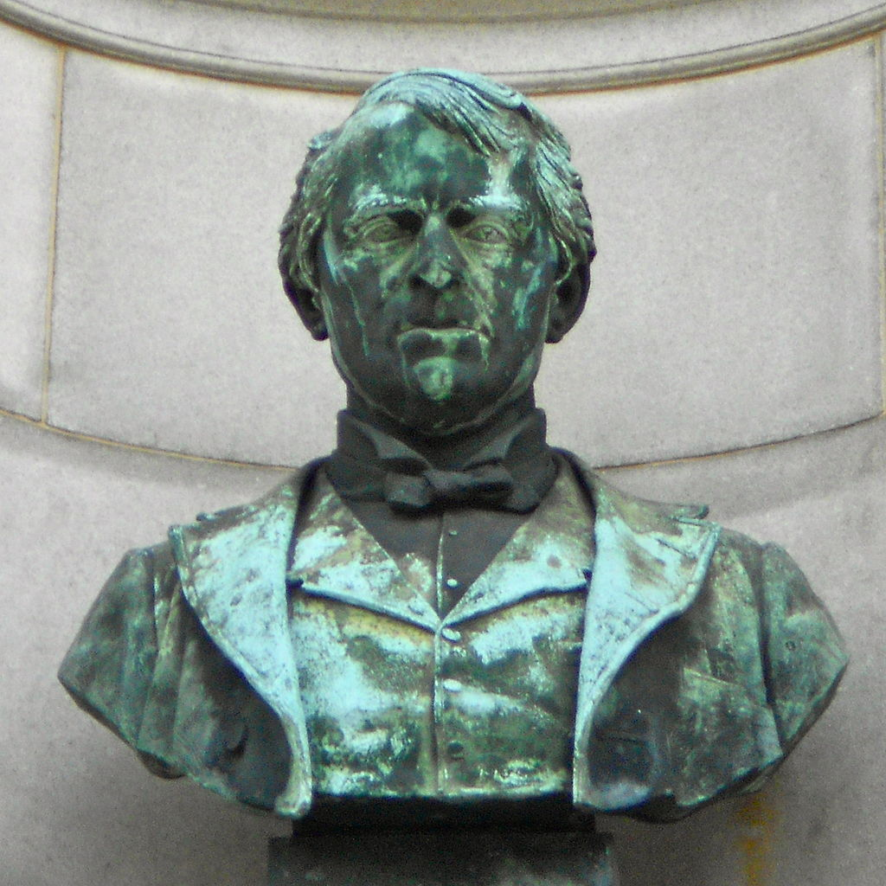

Биография
Кёртин родился в Бельфонте, штат Пенсильвания. Источники дают две возможных даты рождения: 22 апреля 1815 года[3][4] и 22 апреля 1817 года.[5] На надгробии значится 1815 год.[6]
Отец, Роланд Кёртин-старший, был богатым уроженцем Ирландии (графство Клэр) и занимался производством железа: в 1810 году вместе с партнером он основал металлургический завод Eagle Ironworks в пенсильванском поселке, который назвал своим именем. Мать Джейн (Грегг) Кёртин была дочерью сенатора США Эндрю Грегга
Он учился в Академии Бельфонте, в Дикинсон-колледже и на юридическом факультете (ныне университет штата Пенсильвания) и работал адвокатом.
Кёртин впервые занялся политикой на выборах 1840 года, когда он организовал кампанию за кандидата в президенты вигов Уильяма Генри Гаррисона.[7] В 1855 году губернатор Джеймс Поллок назначил его главным инспектором школ штата. С распадом партии вигов Кёртин перешел в образованную Республиканскую партию и успешно баллотировался на пост губернатора Пенсильвании в 1860 году. Кёртин был переизбран на эту должность в 1863 году. На президентских выборах 1860 года Куртин содействовал номинации Авраама Линкольна.
Кёртин был решительным сторонником политики президента Линкольна в период Гражданской войны, и как губернатор поставил Пенсильвании на военные рельсы.[7] Кёртин организовал резервистов штата в боевые части и наблюдал за созданием Кэмп-Кёртин (англ. Camp Curtin) — первого военного лагеря Союза для подготовки ополченцев (в сельскохозяйственной школе неподалеку от Гаррисберга). База открылась 18 апреля 1861 года, и за четыре года там прошли военную подготовку более 300 000 человек. В последующие годы Кёртин стал близким другом и доверенным лицом Авраама Линкольна, много раз бывал в Белом доме.
Кёртин активно проявил себя во время Геттисбергской кампании, работая с генерал-майором Дариусом Каучем и майором Грэнвиллом О. Холлером, чтобы задержать Северовирджинскую армию Роберта Ли и не дать ей форсировать реку Саскуэханна. Генерал-майор Джордж Г. Мид из Пенсильвании, которого Кёртин рекомендовал сделать бригадным генералом и дать ему под командование одну из резервных бригад Пенсильвании в 1861 году, в итоге победил Ли в битве при Геттисберге .
После битвы при Геттисберге губернатор Кёртин выступал за создание в этих местах Национального кладбища (англ. National Cemetery), обеспечил присутствие президента Линкольна на посвящении кладбища. Губернатор Кёртин был рядом с Линкольном, когда тот выступил с Геттисбергской речью.
В свой первый срок губернатор Кёртин перенес во время войны тяжелый стресс. Всё чаще секретарь штата Илай Слайфер заменял его в решении повседневных проблем, когда Кёртин был недееспособным. Президент Линкольн предложил губернатору дипломатическую должность за границей, но он решил баллотироваться на переизбрание в 1863 году.
С целью координации боевых действий Союза Кёртин созвал Военную конференцию лояльных губернаторов (англ. War Governors' Conference) 24 и 25 сентября 1862 года в Алтуне. Это мероприятие также стало одним из его значительных вкладов в победу Союза. Он сформировал представительство штата Пенсильвания (англ. Pennsylvania State Agency) в Вашингтоне с отделением в Нэшвилле, штат Теннесси, для оказания помощи раненым солдатам на поле боя и их эвакуации. Он также основал финансируемую штатом Школу для сирот (англ. Orphan’s School), чтобы помогать и обучать детей военнослужащих, отдавших жизнь за Союз.
Вскоре после войны Кёртин был избран почетным членом (англ. 3rd Class Companion) Военного Ордена Лояльного Легиона Соединенных Штатов (англ. Military Order of the Loyal Legion of the United States) в знак признания его заслуг во время войны
После войны Кёртин проиграл номинацию в Сенат Саймону Кэмерону и был назначен посланником в России президентом Улиссом С. Грантом. Президент назначил его на должность 16 апреля 1869 года. 28 октября 1869 Кёртин вручил верительные грамоты и прослужил на этом посту примерно до 1 июля 1872 года[2]. Во время пребывания Кертина в Санкт-Петербурге великий князь Алексей Александрович побывал в США в качестве офицера российской военно-морской эскадры — это был первый официальный визит представителя династии Романовых в США[8].
Позднее Кёртин перешел в Демократическую партию и избирался в Конгресс США с 1881 по 1887 год.
Кёртин скончался у себя на родине, в Бельфонте, штат Пенсильвания, и похоронен там на кладбище Юнион.[7]
Семья Кёртина имела заметное влияние в пенсильванской политике и в период Гражданской войны. Он был правнуком Джеймса Поттера, вице-президента Пенсильвании, и приходился внуком Эндрю Греггу, также известному политику штата. Он приходился дядей генералу Джону И. Греггу и двоюродным братом генералу Дэвиду Макмертри Греггу. Он был также двоюродным братом полковника Джона И. Кёртина.